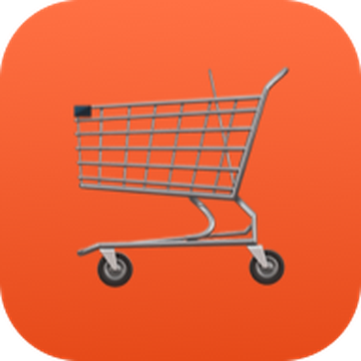
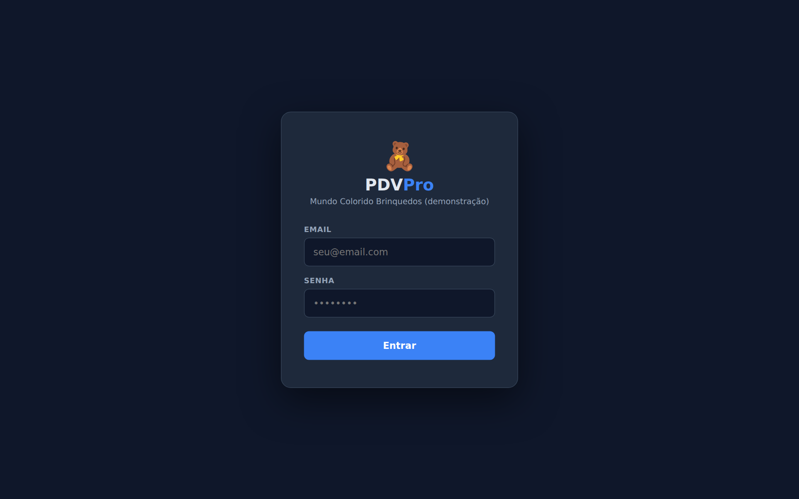
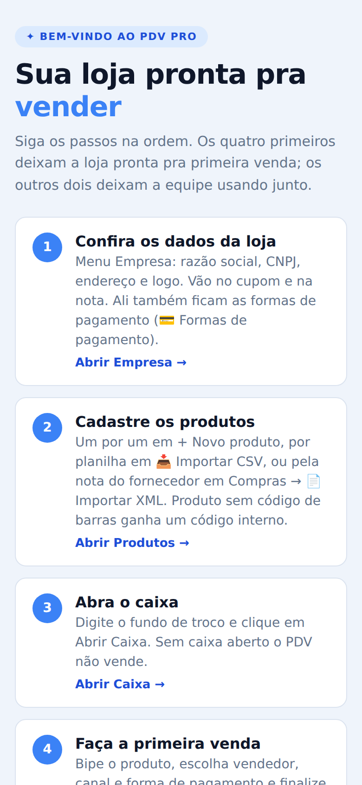
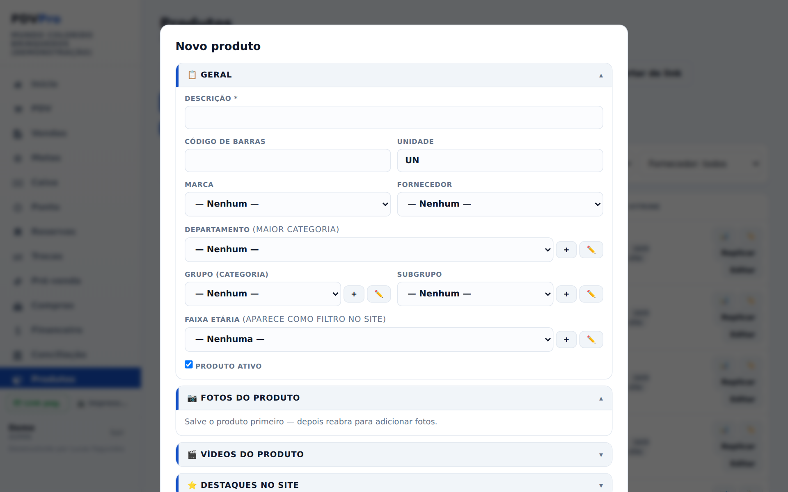
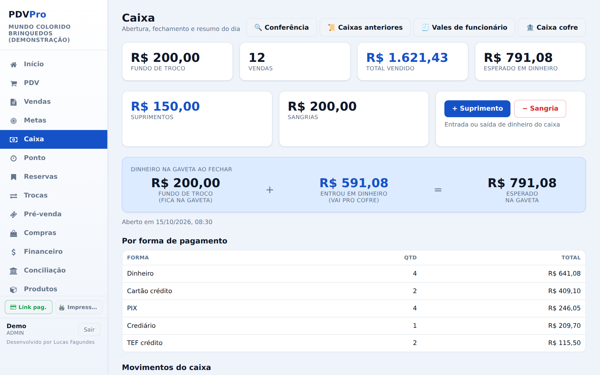
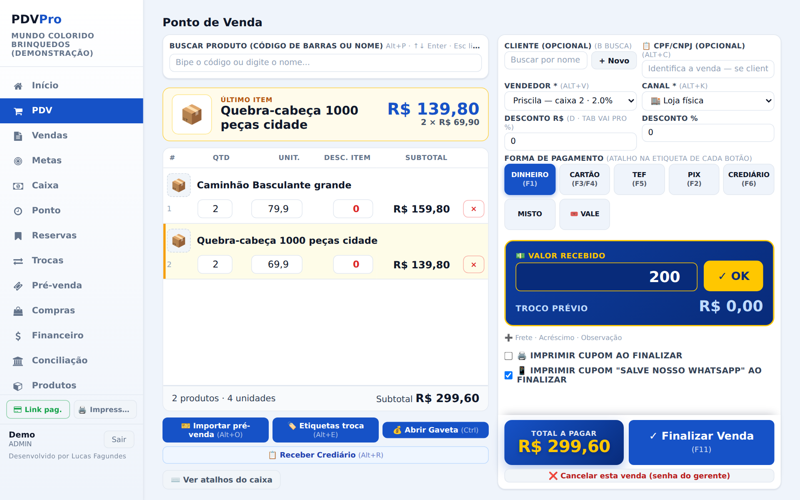
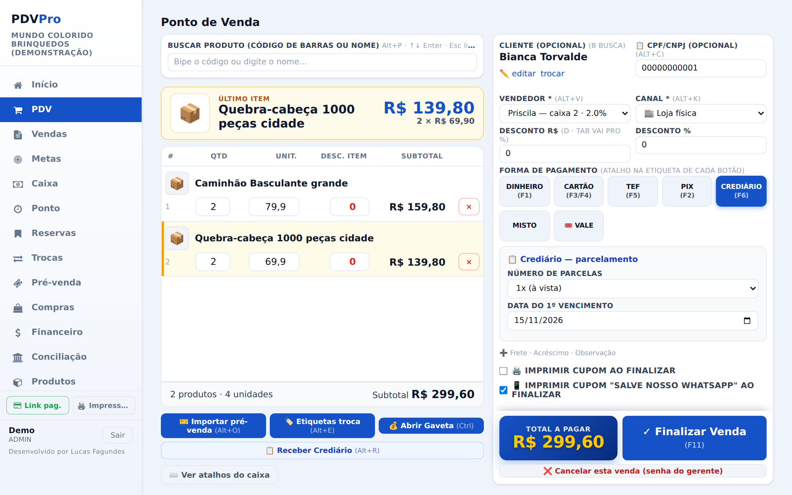
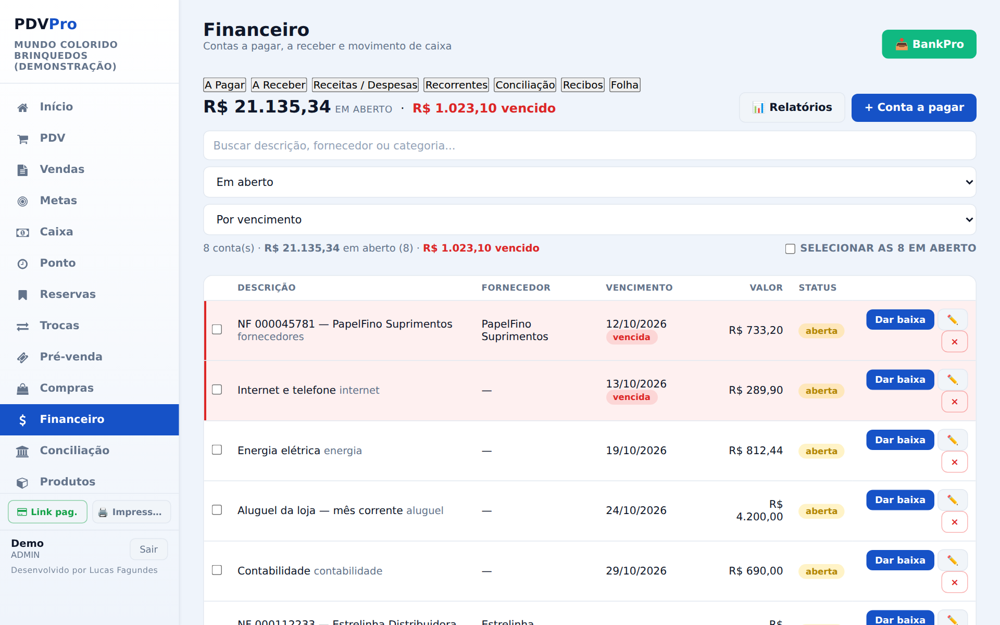

PDVProDo primeiro acesso até a loja vendendo: o caixa, os produtos, o crediário, a nota fiscal e as dúvidas mais comuns.
Cada loja tem o seu PDV Pro, com endereço próprio, que você recebe na implantação. Funciona no navegador do computador e do celular.
Digite o Email e a Senha do seu login e clique em Entrar.
Não há recuperação pela tela de entrada. Peça pro Admin da loja: ele define uma nova em Usuários → Editar → Senha. Se você é o Admin, chame o suporte no WhatsApp.
Depois de entrar com a senha, toque no 🔐 ao lado de Sair pra usar o Face ID ou a digital naquele aparelho. Pra pôr o ícone na tela do celular, abra o endereço da loja seguido de /instalar e siga o passo a passo do iPhone ou do Android.

No primeiro acesso o sistema abre a tela de boas-vindas, com 6 passos. Os 4 primeiros deixam a loja pronta pra primeira venda:
Menu Empresa: razão social, CNPJ, endereço e logo. Vão no cupom e na nota. Ali ficam também as formas de pagamento.
Um por um, por planilha ou pela nota do fornecedor (veja a seção 3).
Com o fundo de troco. Sem caixa aberto o PDV não vende.
No PDV (veja a seção 4).
Menu Usuários: um login pra cada pessoa. Admin vê tudo; Gerente, Operacional, Caixa e Pré-venda veem as telas liberadas em 🔑 Permissões dos perfis.
Instale no celular e, no computador do caixa, escolha as impressoras em 🖨️ Impressoras, no rodapé do menu.
Depois toque em Tudo certo, ir pro sistema →. Dá pra rever esses passos quando quiser pela Ajuda, no fim do menu.

| Um por um | Produtos → + Novo produto. Só a Descrição é obrigatória. Preencha código de barras, marca, fornecedor, grupo, custo, preço de venda, estoque e, na parte 🧾 Fiscal (NF-e), NCM, CFOP e origem. Foto: reabra o produto depois de salvo. |
| Por planilha | Produtos → 📥 Importar CSV. O arquivo tem que ser .csv (no Excel: Salvar como → CSV), separado por vírgula ou ponto e vírgula. |
| Pela nota do fornecedor | Compras → 📄 Importar XML (ou bipe a chave do DANFE). Ligue cada item a um produto que já existe (🔗) ou crie um novo (➕) e clique em ✓ Registrar compra. O estoque sobe. |

No menu Caixa, digite o fundo de troco e clique em Abrir Caixa. Durante o dia, + Suprimento registra dinheiro que entrou na gaveta e − Sangria, dinheiro que saiu. No fim do dia, confira cada forma de pagamento (tem 🧮 Contar cédulas) e clique em Fechar Caixa.


| Dinheiro F1 | Digite o valor recebido: o troco aparece grande na tela. |
| PIX F2 | Registra o PIX que o cliente fez. O QR Code na maquininha só existe pelo TEF (botão 📲 PIX), quando a maquininha tem essa opção. |
| Cartão F3/F4 | Maquininha sem integração: passe o cartão nela e escolha crédito (com parcelas) ou débito. |
| TEF F5 | Maquininha ligada ao sistema: cobra sozinha ao finalizar e o comprovante sai na impressora. |
| Crediário F6 | Venda parcelada pro cliente pagar depois (seção 5). |
| Misto | Parte em cada forma. A soma tem que bater com o total. |
| Vale F10 | Paga com o vale-compras do cliente. Se sobrar saldo, pode virar contra-vale. |
A loja pode renomear e criar formas em Empresa → 💳 Formas de pagamento.
| Produto e cliente | Alt+P busca produto · Alt+B busca cliente · Alt+N cadastra cliente · Alt+C CPF na nota |
| Venda | Alt+V vendedor · Alt+K canal · Alt+D desconto · F11 finaliza |
| Ações | Alt+O importa pré-venda · Alt+E etiqueta de troca · Alt+R recebe crediário · Ctrl abre a gaveta |
No PDV, ⌨️ Ver atalhos do caixa mostra a lista completa.

Abas A Pagar, A Receber, Receitas / Despesas, Recorrentes, Conciliação, Recibos e Folha. Em cada conta, Dar baixa registra o pagamento (dá pra marcar várias de uma vez). O menu Conciliação cruza o extrato do banco e o relatório dos cartões com as vendas.

| 🖨️ Cupom | Comprovante sem valor fiscal. |
| 🧾 Cupom Fiscal (NFC-e) | Emite a nota da venda. Dá pra pôr o CPF/CNPJ do cliente ali mesmo. |
| 📄 NF-e modelo 55 | A nota grande, quando o cliente pede. |
| Depois | Pelo menu Vendas também dá pra emitir a nota de uma venda. |
A ligação da loja com a nota fiscal é feita pela Luqsys na implantação. O botão da NFC-e só aparece com ela ligada. Em Empresa → 📦 Plano você vê quantas NFC-e já saíram no mês. Dúvida sobre imposto, CFOP ou NCM é com o contador da loja.